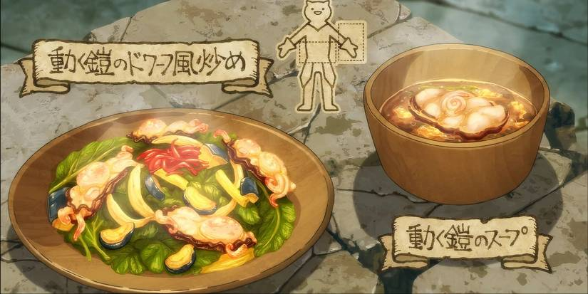
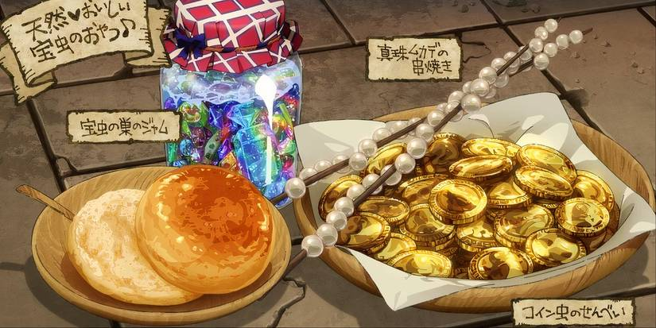

Comer o ser comido
De cómo el hambre mueve la historia
Prince,
No hay mejor manera de construir comunidad que compartir una buena comida. Muchas obras cuyo argumento gira alrededor de la cocina se centran en este tema, pero nada lo amplifica más que tener a un puñado de personajes unidos evitando que la comida acabe con ellos primero.
El manga y anime japonés Tragones y Mazmorras (2014-2023, Ryoko Kui) ha sabido hacer de la gastronomía uno de los puntos clave de su fantástico worlbuilding. Tenemos a Laios y su pandilla, un grupo pobre como las ratas que necesita rescatar a su compañera Fallin de las profundidades de una mazmorra, donde está ejerciendo como cena de un temible dragón rojo. Es una misión de semanas, a niveles muy bajos a los que pocos han podido llegar, plagados de monstruos, y ni aunque pudieran comprar provisiones les sería posible cargar las suficientes. Motivado por su obsesión por las criaturas, Laios no pierde la oportunidad: La comida sería una preocupación menos si pueden ir cazándola y cocinándola por el camino.
Ryoko enriquece rápidamente este pilar estableciendo tabúes. ¿Comer monstruos? Iu, qué asco, eres oficialmente un rarito. Además, ¿Qué pasa si son inteligentes?¿Cómo sabes que no son venenosos?¿De qué manera se supone que debes cocinar insectos del tesoro, mandrágoras o...armaduras vivientes? Senshi, un enano que lleva muchos años viviendo dentro de la mazmorra, tiene las respuestas a algunas de estas preguntas, y su profunda preocupación por la buena alimentación de la campaña le llevará a convertirse en su guía culinario.
Pero ni siquiera él ha llegado nunca tan lejos y juntos deberán enfrentarse a manjares nunca probados. La autora presenta el ciclo completo, negándose a reducir la cocina de su historia a un nombre fantasioso y una bonita presentación. Así, muchas criaturas de la mazmorra tienen a los viajantes en algún punto de su cadena alimentaria y desarrollan adaptaciones para cazarlos. Ser devorado por algo es una amenaza constante, y la solución siempre será comerlo antes de que te coma a ti.
En esta aventura, Laios, Marcille, Chilchuck, Senshi e Izutsumi no solo descubren juntos maneras increíbles de cocinar monstruos, también aprenden sobre cómo la alimentación transforma el extraño entorno de la mazmorra. Sin verlo venir, se dan de bruces con un mundo movido por el hambre, donde los elementos más insospechados necesitan sustento y donde hasta los sueños, las pesadillas y los deseos pueden ser comidos.


